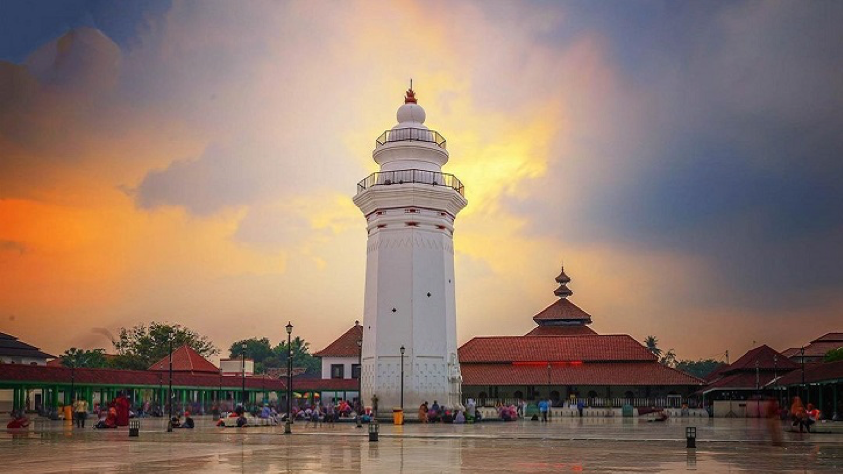

Banten (aksara Sunda: ᮘᮔ᮪ᮒᮨᮔ᮪, Pegon: بنتٓن) adalah sebuah provinsi di Pulau Jawa, Indonesia. Provinsi ini beribu kota di Kota Serang. Provinsi ini merupakan provinsi yang paling barat di Pulau Jawa. Pro vinsi ini sebelumnya pernah menjadi bagi an dari Provinsi Jawa Barat, tetapi provinsi ini menjadi wilayah peme karan sejak tahun 2000, dengan keputusan Undang-Undang Nomor 23 Tahun 2000. Suku aslinya adalah suku Sunda Banten yang berada di wilayah Kabupaten Serang bag ian selatan, Kabupaten Pandeglang, Kabupaten Lebak, serta sebagian besar Kabupaten Tangerang, dan komunitas masyarakat ad at yakni suku Badui yang mendiami wilayah Gunung Kendeng dan Leuwidamar di Kabupaten Lebak.
Wilayah Banten terletak di antara 5º7'50"-7º1'11" Lintang Selatan dan 105º1'11"-106º7'12" Bujur Timur, berdasarkan Undang-Undang Republik Indonesia Nomor 23 Tahun 2000 luas wilayah Banten adalah 9.160,70 km². Provinsi Banten terdiri dari 4 kota, 4 kabupaten, 155 kecamatan, 313 kelurahan, dan 1.238 desa. Banten memiliki wilayah laut yang menjadi salah satu jalur laut strategis yaitu Selat Sunda. Dengan menggunakan kapal-kapal berukuran besar, Selat Sunda menjadi jalur penghubung antara Australia dan Selandia Baru dengan kawasan Asia Tenggara, khususnya Thailand, Malaysia, dan Singapura. Selain itu, wilayah laut Banten adalah jalur penghubung antara Jawa dan Sumatra
Copyright 2023 - Rakha & Faiz & Abul